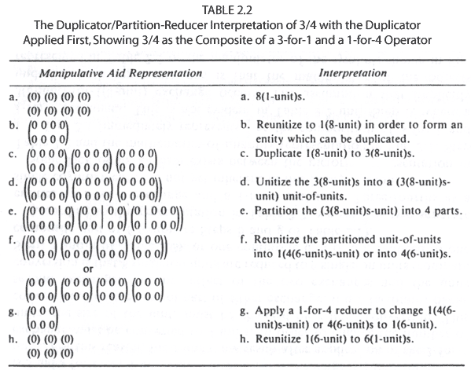
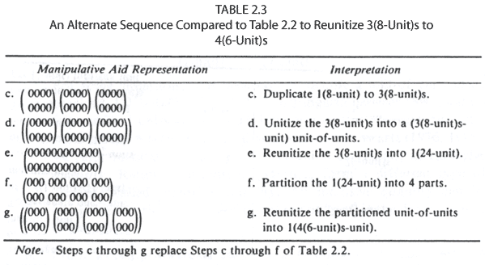
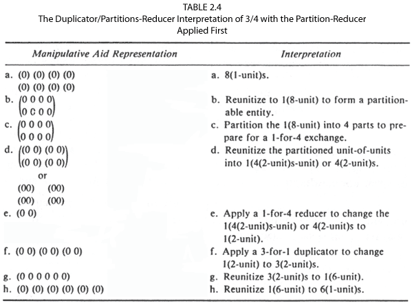
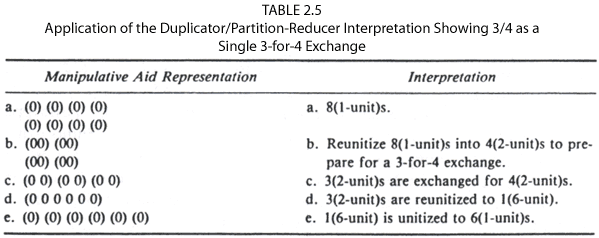
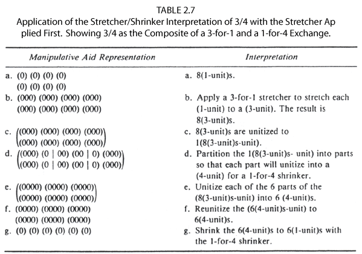
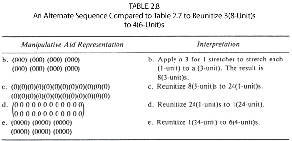
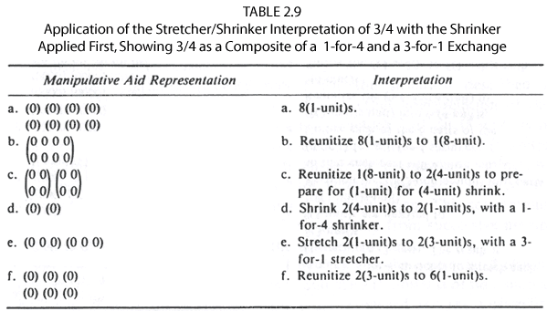
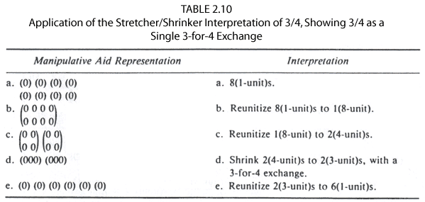
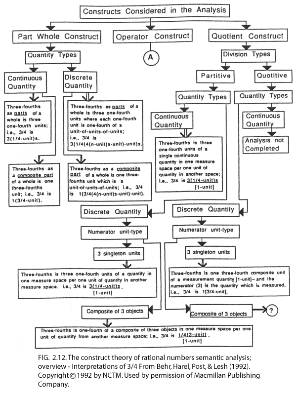

| Rational Number Project Home Page |
|
|
| Behr, M., Harel, G., Post, T., & Lesh, R. (1993). Rational Numbers: Toward a Semantic Analysis - Emphasis on the Operator Construct. In T. Carpenter, E. Fennema & T. Romberg (Eds.), Rational Numbers: An Integration of Research (pp. 13-47). Hillsdale, NJ: Lawrence Erlbaum Associates. |
|
|
| 2 | RATIONAL
NUMBERS: TOWARD A SEMANTIC ANALYSIS - EMPHASIS ON THE OPERATOR CONSTRUCT |
|
Thomas R.
Post Richard Lesh |
Two notational systems are used to present a semantic/mathematical analysis of the operator construct of rational number. The one system constitutes a generic manipulative aid, the other is an abstract representation for a mathematics of quantity model. Different conceptions of the numerator and denominator lead to new interpretations of the operator construct. One of two interpretations elaborated upon is duplicator / partition-reducer, the other stretcher/shrinker. Both present a notion of rational number as an exchange function-that is, they exchange the operand quantity of a rational number operator to a conceptually new quantity that has a ratio to the original quantity equal to the numerator-to-denominator ratio. Differences between problem situations that require one or the other interpretation for an accurate mathematical model are illustrated through example problems and solutions. Computational algorithms implied by the analysis are illustrated and discussed.
When one considers the question of what experiences a child needs in order to have a complete understanding of rational number, the notion that a rational number is an element of an infinite quotient field is overly simplistic. When the concept of rational number is used in real-world situations it takes on personalities that are not captured by that mathematical characterization. In order to be in a position to develop experiences from which children can gain a complete understanding of the concept of rational number, researchers need to explore children's ability to acquire knowledge of these personalities and determine what their informal knowledge of these personalities is. Moreover, teachers and curriculum developers need to be aware of these personalities of rational number. Questions of how to develop learning situations so that elementary and middle-grade teachers acquire knowledge of them need to be addressed. The purpose of this chapter is to explore some of the personalities of rational number and to exemplify the experiential base from which we hypothesize that children, and teachers, can develop an understanding of these rational number personalities.
The notion that a rational number takes on numerous personalities is not new. This idea is captured to some extent in Kieren's early work (1976) in which he characterized rational number in terms of a set of subconstructs. Analyses by other writers give support to this subconstruct theory of rational number (Behr, Lesh, Post, & Silver, 1983; Freundenthal, 1983; Vergnaud, 1983).
Ohlsson (1987, 1988) criticized these analyses of rational number for not exhausting the possible interpretations and for including others that are inappropriate. He suggested additional and alternate interpretations. In an evaluation of Ohlsson's work, Behr, Harel, Post, and Lesh (1992) suggested that some of his interpretations are inaccurate and others are equivalent to subconstructs identified earlier by Kieren (1976) and Behr et al. (1983). We concluded that the subconstructs of rational number-part-whole, quotient, ratio number, operator, and measure - still exemplify the concept of rational number.
Why then another analysis? It has been argued (Behr et al., 1983; Freudenthal, 1983; Kieren, 1976; Vergnaud, 1983) that a complete understanding of rational number depends on an understanding of each rational number subconstruct separately and on an integration of all of them. Explicit information is lacking among researchers and teachers on the following: (a) What concepts underlie understanding of the separated constructs? (b) What concepts are common among the constructs and could provide a basis for their integration? and (c) What instructional experiences do we need to give children to facilitate their construction of these understandings and integrations? This chapter offers an analysis of the operator construct of rational number to address these questions and raises additional questions for subsequent analysis and cognitive research. The analysis provides a further refinement of the operator subconstruct by considering alternative interpretations for the numerator and denominator number pairs.
The points of departure for our analysis are these beliefs: (a) The elementary school curriculum is deficient in failing to include the range of concepts relating to multiplicative structures that are necessary for later learning in middle grades; and (b) the middle grades curriculum is deficient in that multiplicative concepts are presented in such a way that they remain isolated and not interconnected.
These deficiencies are exemplified in two broad categories, which form the basis for the analysis reported in this chapter: (a) lack of problem situations that provide experience with composition, decomposition, and conversion of conceptual units (Steffe, 1986, 1988; Steffe, Cobb, & von Glasersfeld, 1988), and (b) lack of consideration of arithmetic operations, for both whole and rational numbers, from the perspective of the mathematics of quantity (Schwartz, 1976, 1988).
COMPONENTS OF THE ANALYSIS
We have employed two forms of analysis: (a) diagrams that represent the physical manipulation of objects, and (b) the notation of a mathematics of quantity. Our aim is to present a semantic representation of the concepts analyzed with the diagrams and a mathematical analysis with a mathematics-of-quantity model, which have a close step-by-step relationship with each other.
General Comments on the Notational Systems
We have developed two companion representational systems. One system is a generic manipulative representation. It is generic in the sense that no special attributes, such as geometric shape, spatial orientation, partitionability of individual objects, are ascribed to the representations. The manipulative representations are presented in the form of pictures and are intended to suggest manipulations of real objects that children should experience in order to construct understanding of the mathematical concepts represented. The generic manipulative represents the semantics of the mathematical concepts that are dealt with in the analysis. The notation embodies the perspective that children's construction of number concepts depends on the formation and re-formation of units of quantity. We intend to represent the type of units we believe a child needs to construct, manipulate, and reconstruct in order to understand the mathematics presented.
The parallel symbolic notational system is a general representation for the mathematics of quantity. It is general in the sense that abstract rather than specific unit labels are used. For example, rather than using unit labels such as one-apple or one-inch, we represent either of them as 1(1-unit). If 12 eggs constitute a unit, we would call this a 12-unit and denote it as 1(12-unit). Thus, the unit labels we use in the mathematics-of-quantity representation are, in effect, variables that can be replaced by any standard or nonstandard unit name. Because the two systems are isomorphic we can present the same unit types in the mathematics-of-quantity representation that are represented with the generic manipulative aid.
The generic manipulative representation models the learner's conception of the number concepts, and the mathematics-of-quantity representation gives a correspondingly more formal perspective in terms of a mathematical system. We refer to the combined analysis based on the two notational systems as a semantic/mathematical analysis. Through the analysis we hope to show relationships between mathematical concepts. The relationship might consist of necessary prerequisite cognitive structures for understanding a concept or common cognitive structures in several different concepts. Second, we expect our analysis to suggest areas of empirical research into children's mathematical thinking. Finally, we believe that the analysis presented in the two representational systems will give the reader a much deeper understanding of the mathematical concepts under analysis. Within the context of this chapter, that means a deeper understanding of the operator construct of rational number.
We do not necessarily think of the notational systems as being ones to be used with children, although the generic manipulative aid might be adaptable to a computer microworld. Some variation of the general mathematics-of-quantity symbol system might be developed for children in which ordinary grouping words (standard and nonstandard unit labels) are used to denote the unitization of quantities. To illustrate, consider the following example: A golf ball showcase has 14 boxes of golf balls where each box of golf balls has 4 tubes with 3 balls in each tube. One might think of forming a unit of 3 balls, a (3-unit), and then think of the box as a unit of 4 tubes. This requires one to form a unit of 4 (3-unit)s, a unit-of-units. Each one of these units-of-units we denote as 1 (4(3-unit)s-unit). The showcase has 14 of these units, 14(4(3-unit)s-unit)s. One could conceptualize the showcase of boxes of tubes of balls as a unit-of-units-of-units; that is, we could think of unitizing the 14 units-of-units (i.e., the 14(4(3-unit)s- unit)s) into one unit. We denote this as 1(14(4(3-unit)s-unit)s-unit). To summarize: (a) We started with some (3-unit)s, (b) we grouped the (3-unit)s into groups of 4 (3-unit)s, (c) we unitized each group as 1(4(3-unit)s-unit), (d) we considered all 14 (4(3-unit)s-unit)s, and (e) we unitized these as 1(14(4(3-unit)s-unit)s-unit). On the other hand, if one is presented the notation 1(14(4(3-unit)s-unit)s-unit), it can be unpacked in at least two ways. One way is to work from the outside in and think of 1(14-unit), which is a unit of 14 (4-unit)s, and each (4-unit) is a unit of 4 (3-unit)s. The alternative is to work from the inside out. Starting with a (3-unit) we make each 4 of these into a (4-unit) and finally make 14 of these (4-unit)s into a (14-unit).
A Detailed Analysis of the Formation of Units
In the generic manipulative notational system, 0, *, and # are used to denote discrete objects such as an apple, an orange, or a stone. We enclose one or more of these symbols within usual symbols of grouping ( ), [ ], and ( ) to indicate that the collection is to be considered a unit and the usual device of shading is used to designate fractional parts of units. Combinations of grouping symbols are used to represent complex units, such as composite units-of-units and units-of-units-of-units, and units of intensive quantity (ratios of units from the same or different measure spaces). We use the ( ) grouping symbols most, reserving the [ ] and { } symbols when there is a need to distinguish different measure spaces or to identify some special types of units of quantity such as units of intensive quantity. Additional detail about the formation and notation of units follows. The discussion of the notational systems is more extensive than is needed for reading the section on the analysis of the operator construct. We have marked the critical notations for this analysis with an asterisk. The remaining notations serve as a reference for reading the later section, An Overview of Our Semantic Analysis, and especially the flow chart in Fig. 2.12, included in that section. The notations are as follows:
- * From a single
object, 0, we can conceptualize a singleton unit, denoted in
the two notational systems as:
(0), 1(1-unit),
or we can conceptualize several singleton units:
(0) (0) (0), 3(1-unit)s.
- * From several
objects, 000, we can conceptualize a composite unit: (000), 1
(3-unit).
- * From several
singleton units, (0) (0) (0) (0), or several composite (3-unit)s, (0
0 0) (0 0 0) (0 0 0) (0 0 0), we can conceptualize units-of-units:
((0) (0) (0) (0)), 1(4(1-unit)s-unit),
((000) (000) (000) (000)), 1(4(3-unit)s-unit).
- * From several
composite units-of-units
((00)(00)(00)(00)) ((00)(00)(00)(00)) ((00)(00)(00)(00)), we can conceptualize a composite unit-of-units-of-units:
(((00)(00)(00)(00)) ((00)(00)(00)(00)) ((00)(00)(00)(00))),
1(3(4(2-unit)s-unit)s-unit).
In both notational systems the number of embeddings of paired left and right parentheses indicates the depth of the embedding of units.
- From several units
such as (0) (0) (0) (0) and two measure spaces
( ) and [ ] , we can conceptualize a unit of intensive quantity, an intensive unit or measure unit with 4 (1-unit)s per [1-unit] or with 4(1-unit)s per [4-unit]:
[(0)•(0)•(0)•(0)], 4(1-unit)s or 4(1-unit)s
[1-unit] [4-unit]
For some situations, it is necessary to denote a unit-of-units using brackets, [(00) (00) (00) (00)]. To distinguish between this notation for a unit-of-units and the notation for a unit of intensive quantity, we insert the • between units. Consistent with Schwartz (1976, 1988), we refer to quantity denoted by 4(1-unit)s or [1-unit] as extensive quantity. Ratios of extensive quantities form a different type of quantity called intensive quantity. An intensive quantity can be recognized by the implicit or explicit use of "per" in the description of the quantity.
- From a composite
unit such as a (4-unit), (0 0 0 0), we can conceptualize another type
of unit of intensive quantity, 1 (4-unit) per [1-unit], which also can
serve as a measure unit:
[(0000)], 1(4-unit)
[1-unit].
Representing Fractional Quantities. We next turn our attention to the issue of representing fractional quantities with the two notational systems. Fractional parts of units also are quantities that can be unitized as several different unit types. For example, 2/4 can be conceptualized in terms of several unit types, among which are: 2/4(4-unit), 1(2/4(4-unit)-unit), and l[2/4-unit]. We illustrate below how the notational systems capture these subtleties:
- From a composite
unit, for example, a (4-unit) made of singleton objects, (0000), or
units-of-units,
((0) (0) (0) (0)) or
((0 0 0) (0 0 0) (0 0 0) (0 0 0)), we can conceptualize one fourth of a unit:
(0000), 1/4(4-unit),
((0) (0) (0) (0)), 1/4 (4(1-unit)s-unit),
((0 0 0) (0 0 0) (0 0 0) (0 0 0)), 1/4(4(3-unit)s-unit).
We also can conceptualize 2/4 of a composite unit:
(0 0 0 0), 2/4(4-unit)
((0) (0) (0) (0)), 2/4(4(1-unit)s-unit)
((0 0 0) (0 0 0) (0 0 0) (0 0 0)), 2/4(4(3-unit)s-unit).
- The 2 objects or
units can be taken as a unit. Thus, from 2/4 of a (4-unit), we can conceptualize
a fractional-unit-of-units:
((0 0) 0 0), 1(2/4(4-unit)-unit)
(((0) (0)) (0) (0)), 1(2/4(4(1-unit)s-unit)-unit)
(((0 0 0)(0 0 0))(0 0 0)(0 0 0)), 1(2/4(4(3-unit)s-unit)-unit).
- From an intensive
quantity or measure unit of the type 1(4-unit) per [1-unit], [(0 0 0
0)], we can conceptualize two fourths of the measure unit:
[(0 0 0 0)], 2/4[1-unit];
- From the 2/4[1-unit]
quantity, we can conceptualize a unitization to a composite unit:
[((00) 0 0)], [2/4[1-unit]-unit].
- The [2/4[1-unit]-unit] can also be conceptualized as l[2/4-unit].
These notational systems
just described, as well as those described earlier, are summarized in
Table 2.1.
|
TABLE
2.1
|
|||||
|
Notation
Systems Used in the Semantic Analysis
|
|||||
|
Type
of Unit
|
Pictorial
Representation
|
Mathematics
of Quantity
Representation |
|||
|
|
|||||
| A singleton object | 0, *, #, ... | ||||
| A singleton unit | (0) | (1-unit) or 1(1-unit) | |||
| Three singleton units | (0) (0) (0) | 3(1-unit)s | |||
| A composite unit of 3(1-unit)s | 1(3-unit) | ||||
| Four composite (3-unit)s | (0 0 0) (0 0 0) (0 0 0) (0 0 0) | 4(3-unit)s | |||
| A composite unit of 4 (3-unit)s, a unit-of-units | ((0 0 0) (0 0 0) (0 0 0) (0 0 0)) | (4(3-unit)s-unit) | |||
| An intensive unit of 4 (1-unit)s per 1[1-unit], a measure unit | [(0)•(0)•(0)] | 3(1-unit)s
or 3(1-unit)s [1-unit] [3-unit] |
|||
| A composite unit of 2 intensive units, a unit-of-units | [(0)•(0)•(0)] [(0)•(0)•(0)] |
|
|||
| An intensive unit of 1(4-unit) per [1-unit], a measure unit | [(0 0 0 0)] | 1(4-unit) [1-unit] |
|||
| To designate 1/4 of a (4-unit) | ((0)
(0) (0) (0)) or (0 0 0 0), or ((0 0 0) (0 0 0) (0 0 0) (0 0 0)) |
1/4(4-unit), 1/4(4(3-unit)s-unit) |
|||
| To designate 2/4 of a (4-unit) | ((0)
(0) (0) (0)) or (0 0 0 0), or ((0 0 0) (0 0 0) (0 0 0) (0 0 0)) |
2/4(4-unit), 2/4(4(3-unit)s-unit) |
|||
| To designate 1/4 of a 1(4-unit) per [1-unit] measure unit | [(0 0 0 0)] | 1/4[1-unit] | |||
| To designate 2/4 of a 1(4-unit) per [1-unit] measure unit | [(0) (0) (0) (0)] | 2/4[1-unit] | |||
| To designate a unitized 2/4 of a 1(4-unit) per [1-unit] measure unit | [((0 0) 0 0)] | 1(2/4[1-unit]-unit) | |||
| To designate one 1/4 unit of a 4(1-unit)s/[1-unit] measure unit | [(0)•(0)•(0)•(0)] | 1[1/4-unit] | |||
| To designate two 1/4 units of a 4(1-unit)s/[1-unit] measure unit | [(0)•(0)•(0)•(0)] | 2[1/4-unit]s | |||
| To designate unitized two 1/4 units of a 4(1-unit)s of a 4(1-unit)s per [1-unit] measure unit | [((0) (0))•(0)•(0)] | 1[2/4-unit] | |||
|
|
|||||
THE OPERATOR CONCEPT OF RATIONAL NUMBER
The operator concept of rational number suggests that the rational number 3/4 is thought of as a function that is applied to some number, object, or set. The operator construct can be analyzed within each of the following interpretations: (a) duplicator and partition-reducer, (b) stretcher and shrinker, (c) multiplier and divisor, (d) stretcher and divisor, and (e) multiplier and shrinker. In this chapter we limit presentation and discussion of our analysis to interpretations (a) and (b).
The Duplicator/Partition-Reducer Interpretation
Discussion of the duplicator/partition-reducer interpretation should give attention to both discrete and continuous quantities and to the question of the order in which the duplication and partition-reducer operators are applied. Moreover, the issue of units composition is significant. We illustrate the duplicator and partition-reducer interpretation of rational number starting with Table 2.2. Throughout, we illustrate the application of the operator 3/4 to the operand 8. The generic manipulative representations are given assuming that a child who would be learning from or doing these manipulations of objects has a background from elementary school that provides for at least implicit knowledge of the following unit-conversion principles:
- l(a-unit) = a(1-unit)s, where a is any rational number.
- a(b-unit)s = b(a-unit)s, where a and b are any rational number
- a(b-unit)s = c(d-unit)s, where ab = cd (or a/c = d/b).
- (a-unit)
= (c-unit) , where a and c are any rational numbers.
[a-unit] [c-unit] - l(y-unit) = l(n(m-unit)s-unit), where y = n x m and m, n, and y are natural numbers.
We understand that children do not get this experience in the traditional elementary mathematics curriculum. It is an emphasis we strongly advocate in the elementary school curriculum.
An observation needs to be made about the sequence in Table 2.2. The reunitization in going from Step c to Step f is rather complex. At the manipulative level it involves what Behr et al. (1983) called a perceptual distractor. The effect of the distractor may be sufficiently powerful to inhibit some children's application of the unit-conversion principles. An alternate unitization for Steps c through f, which removes the distractor but involves a change to units of one, is shown in Steps c through 9 in Table 2.3.
The process illustrated
in Table 2.2 has a mathematics-of-quantity interpretation shown in Fig.
2.1. (Letters in parentheses correspond to letters denoting steps in Table
2.2.) 

| 1. | 3/4(8) | = | 3(1-unit)s/(1-unit) [a] | x 8(1-unit)s | (a) | |
| 4(1-unit)s/(1-unit) | ||||||
| 2. | = | 3(1-unit)s/(1-unit) | x 1(8-unit) | (b) | ||
| 4(1-unit)s/(1-unit) | ||||||
| 3. | = | 3(8-unit)s | x 1(8-unit) / | 4(1-unit)s | (c) | |
| (8-unit) | (1-unit) | |||||
| 4. | = | 3(8-unit)s / | 4(1-unit)s | (d) | ||
| (1-unit) | ||||||
| 5. | = | 4(6-unit)s / | 4(1-unit)s | (e) | ||
| (1-unit) | ||||||
| 6. | = | 4(6-unit)s / | 4(6-unit)s | (f) | ||
| (6-unit) | ||||||
| 7. | = | 1(6-unit) | (g) | |||
| 8. | = | 6(1-unit)s | (h) | |||
| [a] The meaning of this complex notation is as follows: The numerator, 3(1-unit)s/(1-unit), denotes a 3-for-1 exchange and the denominator, 4(1-unit)s/(1-unit), denotes a 4-for-1 exchange. Because the 4-for-1 exchange appears in the denominator, it denotes the reciprocal (or inverse) of this, a 1-for-4 exchange. Thus, the entire complex symbol denotes the composite of a 3-for-1 and 1-for-4 exchange. | ||||||
| FIG. 2.1. The mathematics-of-quantity representation of the duplicator/partition-reducer interpretation of 3/4 with the duplicator applied first, showing 3/4 as a composite of a 3-for-1 and a 1-for-4 exchange. | ||||||
Looking back over the demonstration in Table 2.2, we can make some observations about the cognitive mechanisms that a child would need in order to use manipulatives to find 3/4 of 8 according to a duplicator /partition- reducer interpretation of 3/4. First, the duplication process can be thought of as an exchange - the duplication of an (8-unit) by a factor of 3 can be thought of as an exchange of 3(8-unit)s for 1(8-unit). Similarly, the partition-reducer process can be thought of as an exchange. The partition- reduction of 4(6-unit)s by a factor of 4 can be thought of as an exchange of the 1(6-unit) for 4(6-unit)s. An important observation about the duplicator operator and the partition-reducer operator is that each is an exchange of units of the same size; that is, although the number of units is increased or decreased, the size of the unit remains fixed. However, the 3-for-1 exchange is 3 units for every 1 unit whereas the 1-for-4 exchange is 1 unit for every 4 units. For this reason, the 3 units that result after application of the 3-for-1 exchange must be converted to 4 units. In order to change the number of units, the size of the units must be changed by a units conversion. This conversion, however, is not part of either exchange. It is a facilitator of the second exchange. The net effect of the two exchanges and the units conversion is that 8 singleton units are reduced to 6 singleton units (compare Steps a and h of Table 2.2), or one composite unit of 8 is reduced to one composite unit of 6 (compare Steps b and g of Table 2.2).
According to the representation in Table 2.2, we see 3/4 as two separate entities - a 3-for-1 exchange and a 1-for-4 exchange. Three-fourths as a single cognitive entity is not yet inherent in this interpretation.
Some lack of parallelism exists between the pictorial representation in Table 2.2 and the mathematics-of-quantity representation in Fig. 2.1. Step 1 in Fig. 2.1 immediately represents 3/4 as the composition of 3-for-1 and 1-for-4 exchanges. This is not evident in Table 2.2 until Step c, where a 3(8-unit)-for-1(8-unit) exchange occurs. The assumption that implicitly underlies both representations is that the manipulator of the objects represented in Table 2.2 or the manipulator of the symbols shown in Fig. 2.1 had a plan in mind that included interpretation of 3/4 as this composite function. Children do not always have such a plan for a problem sequence (Post, Wachsmuth, Lesh, & Behr, 1984). For some children, a successor to a given step in a sequence of object manipulations comes by trial and error; the present state of the manipulative suggests a next step, without the child necessarily knowing in advance where this would lead to. Post et al. (1984) referred to children as achieving manipulative independence when their understanding increased to the point where they could plan and anticipate the sequence of object manipulations in advance of doing them, and use the manipulations as an instantiation and verification of the plan. Most children seem to acquire this independence within a small problem domain as they practice with and discuss the interpretations of the object manipulations. Some children, however, never seem to achieve this manipulative independence and remain manipulative dependent. In the absence of such a plan, the alternative unitization given in Table 2.3 is likely.
We proceed next in Table 2.4 to investigate the effect on the interpretation of 3/4 when the order in which the denominator-operator and numerator- operator are applied is reversed; that is, the partition-reducer exchange is applied first, followed by the duplicate exchange.
The mathematics-of-quantity representation that corresponds to the manipulative representation in Table 2.4 is presented in Fig. 2.2.
In comparing the processes suggested by the pictorial representations in Tables 2.2, 2.3 and 2.4, we can see that changing the order in which the numerator and denominator operators are applied for the duplicator/partition-reducer interpretation does not affect the final result. However, the complexity of the unitization of the quantity to which a partition operator is applied might be greater in the case when the duplicator exchange operator is applied first. (Compare Tables 2.2 and 2.4.)

In the manipulative representation in Table 2.5, we give the sequence of manipulations that shows 3/4 as a direct 3-for-4 exchange as compared to the composition of 3-for-1 and 1-for-4 exchanges. The latter representation of 3/4 as a single exchange is important because we hypothesize that it has the potential to suggest that 3/4 is a single entity; whereas the representation as the composite of two exchanges supports the interpretation that children frequently hold that 3/4 and other rational numbers are made up of two separate entities.

| 1. | 3/4(8) | = | 3(1-unit)s/(1-unit) | x 8(1-unit)s | (a) | |
| 4(1-unit)s/(1-unit) | ||||||
| 2. | = | 3(1-unit)s/(1-unit) | x 1(8-unit) | (b) | ||
| 4(1-unit)s/(1-unit) | ||||||
| 3. | = | 3(1-unit)s | x 1(8-unit) / | 4(1-unit)s | (c) | |
| (1-unit) | (1-unit) | |||||
| 4. | = | 3(1-unit)s | x 4(2-unit)s / | 4(1-unit)s | (d) | |
| (1-unit) | (1-unit) | |||||
| 5. | = | 3(1-unit)s | x 4(2-unit)s / | 4(2-unit)s | (e) | |
| (1-unit) | (2-unit) | |||||
| 6. | = | 3(1-unit)s | x 1(2-unit) | (e) | ||
| (1-unit) | ||||||
| 7. | = | 3(2-unit)s | x 1(2-unit) | (f) | ||
| (2-unit) | ||||||
| 8. | = | 3(2-unit)s | (f) | |||
| 9. | = | 1(6-unit) | (g) | |||
| 10. | = | 6(1-unit)s | (h) | |||
| FIG.2.2. The mathematics-of-quantity representation with the partition-reducer applied first, showing 3/4 as a composite of a 1-for-4 and a 3-for-1 exchange. | ||||||
The mathematics-of-quantity representation corresponding to Table 2.5 is given in Fig. 2.3.
Attention needs to be drawn to the difference between the syntax level of performance in going from Step 3 to Step 4 in Fig. 2.3 and the semantic level of performance shown in Steps b and c in Table 2.5. At the syntax level, it appears that the pair of 4(2-unit)s is canceled; at the semantic level, that the 4(2-unit)s (the operand) is replaced by or transformed to 3(2-unit)s.
| 1. | 3/4(8) | = | 3(1-unit)s | x 8(1-unit)s | (a) | |
| 4(1-unit)s | ||||||
| 2. | = | 3(1-unit)s | x 4(2-unit) | (b) | ||
| 4(1-unit)s | ||||||
| 3. | = | 3(2-unit)s | x 4(2-unit) | (c) | ||
| 4(2-unit)s | ||||||
| 4. | = | 3(2-unit)s | (c) | |||
| 5. | = | 1(6-unit) | (d) | |||
| 6. | = | 6(1-unit)s | (e) | |||
| FIG.2.3. The mathematics-of-quantity representation of the duplicator/partition-reducer interpretation, showing 3/4 as a single 3-for-4 exchange. | ||||||
One of the cognitive mechanisms for applying the operator 3/4 to some operand is to group the operand into 4 equal-size parts, or into 4 equal-size units, in order to facilitate the 1-for-4, or 3-for-4 exchange. Questions of the partitioning skills that children require to accomplish this need to be addressed. Not covered in the portion of the analysis presented in this chapter is the two-part question: How could a child use manipulative aids (a) to apply 3/4 to an operand of very large cardinality and (b) to apply 3/4 to an operand for which the cardinality is not a multiple of 4? We gave a demonstration of these in Behr, Harel, Post, and Lesh (1990).
Summary: Duplicator/Partition-Reducer Construct of Rational Number
The duplicator/partition-reducer conception of a rational number x/y has the following interpretations in terms of a quantity representation: y
- x /y is
x(n-unit)s/ 1(n-unit)
y(m-unit)s/l(m-unit) ,
where x, y, m, and n are nonzero whole numbers and m = n if and only if x = y. This is the interpretation that x/y is the composite of two separate exchange functions, an x-for-1 exchange and a 1-for-y exchange - x /y is
x(n-unit)s
y(n-unit)s ,where x, y, and n are nonzero whole numbers. This is the interpretation that x/y is a single x-for-y exchange. In either case, x/y is a function that maps y (n-unit)s to x(n-unit)s.
Our analysis of the duplicator /partition-reducer interpretation leads to the notion that 3/4 is an exchange function. As an exchange function, 3/4 operates on an operand and exchanges every set of 4 units with a set of 3 units of the same size.
Implications of the Duplicator/Partition-Reducer Interpretation for Computation Algorithms
We consider the interpretation of a rational number as a duplicator/ partition-reducer exchange function to be very powerful. As we already have shown, it provides a close relationship between a manipulative level interpretation of a rational number and the syntax of the corresponding mathematics-of-quantity symbolic representation. Moreover, as we show later, the manipulative representations suggest algorithmic computation procedures for the arithmetic-of-numbers. At the manipulative level, a 3-for-4 exchange of objects in an application of the operator concept of 3/4 to some operand can be accomplished as follows: (a) Arrange the objects of the operand into 4 groups, and then (b) replace these 4 groups by 3 groups of the same size. The generalization of this procedure is to: (a) Arrange the operand to which a rational number as duplicator/partition-reducer operator is applied into a number of groups so that the number of these groups is equal to the denominator of the rational number, and then (b) exchange this number of groups by a number of groups equal to the numerator of the rational number. This procedure carries over to a symbolic representation in exactly the same way; that is, application of 3/4 as an operator to some operand is accomplished by first rewriting the symbolic representation of the operand as a number multiplied by 4 (i.e., of the form 4•m) and then actually replacing the 4 in this symbolic representation with a 3. An example of this procedure is shown next:
3/4 (8) = 3/4 (4•2) (Partition 1 group of 8 into 4 groups.)
= 3•2 (Replace 4 groups of 2 with 3 groups of 2.)
= 6 (Reunitize 3 groups of 2 to 1 group of 6.)
This illustration suggests the usual algorithm for multiplication of a whole number by a fraction multiplier. The manipulative level from which these are derived suggests use of the 3/4 function rule, exchange 4 groups with 3 groups. Thus, what might look to the adult reader like cancellation of the 4 in 3/4 with the 4 in 4•2 is really an application of the concept of 3/4 as a 3 groups-for-4 groups exchange function. The 3/4 in the notation 3/4(4•2) is a function rule. The rule is to exchange the 4 in 4•2 with a 3. Thus, application of the function 3/4 to the preimage number 8 (after being expressed as 4•2) gives the image value 6 (expressed as 3•2).
The notation 3/4(8) is an ordinary function notation. More precisely, 3/4(8) means the value of the function 3/4 evaluated at the point 8. With this interpretation of the rational number, the expression 3/4 times 8 really does mean 3/4 of 8. The use of a diagrammatic function notation, such as arrows, would be more appropriate for children. For example, the aforementioned might be more understandable for children if notated as follows:
| 8 | ---3/4--- | >? |
| 4•2 | ---3/4--- | >? |
| 4•2 | ---3/4--- | >3•2 |
| 8 | ---3/4--- | >6. |
Based on the particular demonstration that involved the interpretation of ~ as a direct 3-for-4 exchange, as opposed to a composite of a 1-for-4 and a 3-for-1 exchange, a number-arithmetic algorithm for determining a fraction of a whole number is suggested. Namely, (a) perform a partitive division of the operand using the denominator of the fraction as the divisor , (b) represent the whole number as a product of the number of parts (which equals the denominator of the fraction) times the size of each part, (c) replace the number of parts by the numerator of the fraction, and (d) carry out the resulting indicated multiplication.
Tables 2.2 and Fig. 2.1 in which 3/4 is interpreted as the composite of a 3-for-1 followed by a 1-for-4 exchange suggest an algorithm that, in the instance of applying the operator 3/4 to the operand of 8, would proceed as shown in Fig. 2.4(a). The alternate unitization indicated in Table 2.3 suggests the procedure shown in Fig. 2.4(b). If 3/4 is interpreted as the composite of 1-for-4 followed by 3-for-1 exchanges, the algorithm that is suggested is shown in Fig. 2.4(c):
Curricular implications of this analysis of rational number as a duplicator / partition-reducer exchange operator arise from a consideration of prerequisite knowledge structures that are suggested. These include: (a) ability to partition quantities, (b) flexibility in formation and re-formation of units, (c) understanding of and ability to perform partitive division, (d) an understanding of the concept of function as a mapping, and (e) skill with and understanding of multiplication as repeated addition.
| a. | 3/4(8) | = | 1/4 (3/1(8)) | 3/4 is expressed as a composite of 1/4 and 3/1. |
| = | 1/4 (3•8) | Replace 1 group of 8 with 3 groups of 8. | ||
| = | 1/4 (4•6) | Reunitize the 3 groups of 8 to 4 groups. | ||
| = | 6 | Replace the 4 groups with 1 group | ||
| b. | 3/4(8) | = | 1/4 (3/1(8)) | 3/4 is expressed as a composite of 1/4 and 3/1. |
| = | 1/4 (3•8) | Replace 1 group of 8 with 3 groups of 8. | ||
| = | 1/4(24) | Reunitize the 3 groups of 8 to 1 group of 24.. | ||
| = | 1/4 (4•6) | Partition and reunitize to 4 groups. | ||
| = | 6 | Replace the 4 groups of 6 with 1 group of 6. | ||
| c. | 3/8(8) | = | 3/1(1/4(8)) | 3/4 is expressed as a composite of 3/1 and 1/4. |
| = | 3/1(1/4(4•2)) | Replace 1 group of 8 with 4 groups of 2. | ||
| = | 3/1(1•2) | Exchange 4 groups of 2 with 1 group of 2. | ||
| = | 3•2 | Exchange 1 group of 2 with 3 groups of 2. | ||
| = | 6 | |||
| FIG.2.4. The arithmetic-of-number algorithm suggested by a duplicator/partition-reducer interpretation of 3/4 as a composite of a 3-for-1 and a 1-for-4 exchange in both orders. | ||||
Application of the Duplicator/Partition-Reducer Construct to Problem Solving
A major issue in developing problem-solving skill rests with the ability of students to form a representation that accurately reflects the quantities in the problem and the relationships among these quantities. Two matters come up in problem solving where textbook word problems are used. These relate to so-called extraneous-data and multiple-step problems. Both of these situations make problems more difficult for children to solve. To illustrate, consider the following problem situation and two questions.
Problem Situation 1. Many brands of gum are sold in the form of packages with 5 sticks in a package. Jane has 8 packages of gum. Mary has 3/4 times as much gum as Jane. The following can be asked:
Question 1. How many packages of gum does Mary have?
Question 2. How many sticks of gum does Mary have?
In traditional problem-solving instruction, the information that there are 5 sticks in each package would be considered extraneous data for Question 1 because this question could be answered without that information. Nevertheless, the presence of this data causes difficulty for children. One reason for this might be that the model that is used to answer Question 1 is not an accurate model of the problem situation. That there are 5 sticks in each package is part of the situation. Would problem-solving performance be improved if the symbolic expressions that are used to form a model to answer Question 1 could model the situation more accurately? On the other hand, when concern in the problem situation is for an answer to Question 2, then traditional instruction classifies the problem as a multistep problem. A difficulty for children in solving multistep problems is that carrying out the first step (in this case multiplying 8 times 5) introduces still another quantity into the situation and the relationship of this new quantity to the existing quantities must be established, either before or after the multiplication of 8 and 5 is carried out.
What we do is interpret the problem situation in terms of quantity, using the abstract unit notation, and illustrate that the same initial representation can be used to answer both questions. Differences in the solution process can be seen to depend on a different re-formation of units of quantity.
We interpret the quantities in the problem situation as follows: each 5 sticks of gum is 1(5-unit). Thus, 8 packages of 5 sticks is a unit-of-units, 1(8(5-unit)s-unit). At the upper level of unitization, this is 1(8-unit) - that is, 1 composite of 8 packages.
The mathematics-of-quantity model for the situation described is 3(1-unit)s/4(1-unit)s x 1(8(5-unit)s-unit). A verbal interpretation of this model would be that there is a situation in which 3/4 of an (8-unit) is of concern. The 8 objects that make up the composite (8-unit) are 8 (5-unit)s. Up to this point, we have not begun to answer either question - in fact, we have not even concerned ourselves with which question to answer. We simply have given a mathematical model for a situation. This conceptualization clearly separates the model of the situation from successive manipulations of the model to represent the solution process.
Question 1 is about this 1(8-unit). The fact that the particular 8 objects that are unitized to form this composite unit are 8 (5-unit)s is of no concern; however, it does make the notation more awkward for the unfamiliar reader. Thus, an (8-unit) is the operand of the 3/4 duplicator /partition- reducer exchange function. To apply 3/4 to this operand, we partition this 1(8-unit) into 4 parts (into 4(2-unit)s) and apply the 3/4 operator (3-for-4 exchange) to the operand in this form. The objects that make up the (2-unit)s in the expression 4(2-unit)s are (5-unit)s; that is, the 4(2-unit)s are 4(2(5-unit)s-unit)s. We apply the 3(2-unit)s for 4(2-unit)s exchange to get 3(2(5-unit)s-unit)s. Finally, we reunitize this to 1(6(5-unit)s-unit) and then to 6(5-unit)s. Thus, the answer to Question 1 is 6 packages. A sequence of symbolic statements to answer Question 1 is shown in Steps 1 through 6 of Fig. 2.5. The problem representation and solution procedure to answer Question 2 is shown in Steps 1 through 7 of Fig. 2.5.
| 1. | 3(1-unit)s | (1(8(5-unit)s-unit) | The model of the situation. | |
| 4(1-unit)s | ||||
| 2. | = | 3(1-unit)s | (4(2(5-unit)s-unit)s) | The (8-unit) is reunitized to 4(2-unit)s. |
| 4(1-unit)s | ||||
| 3. | = | 3(2(5-unit)s-unit)s | (4(2(5-unit)s-unit)s) | The conception of 3/4 as a 3-for-4 exchange function is changed to fit the context of the situation. |
| 4(2(5-unit)s-unit)s | ||||
| 4. | = | 3(2(5-unit)s-unit)s | The function rule is applied, 4(2-unit)s is replaced by 3(2-unit)s. | |
| 5. | = | 1(6(5-unit)s-unit) | A reunitization. | |
| 6. | = | 6(5-unit)s | A reunitization. | |
|
||||
| 7. | = | 30(1-unit)s | A reunitization. | |
|
||||
| FIG. 2.5 A mathematics-of-quantity sequence to show the problem representation for Problem Situation 1 and the solution procedure for answering Questions 1 and 2. | ||||
| Table
2.6 A Contextualized Mathematics-of-Quantity Representation for Problem Situation 2 and Solution Procedures to Answer Questions 1 and 2 |
|||
| 1. | 3/4(8 packages of 5 sticks) | The model of the situation | |
| 2. = | 3/4(4 groups of 2 packages of 5 sticks) | The 8 packages are partitioned into 4 groups. | |
| 3. = | 3 groups of 2 packages of 5 sticks | x | |
| 4 groups of 2 packages of 5 sticks | |||
| (4 groups of 2 packages of 5 sticks) | |||
| 4. = | 3 groups of 2 packages of 5 sticks | The result of the 3-for-4 exchange | |
| 5. = | 1 group of 6 packages of 5 sticks | The three groups of 2 packages are joined together into 1 group. | |
| 6. = | 6 packages of 5 sticks | The sticks are taken out of the packages and joined together. | |
| 7. = | 30 sticks | Six separate packages are considered. | |
|
|
|||
Some observations that we think are important about this demonstration follow: (a) The model in Step 1 is an accurate model of the situation; (b) subsequent models that result from transformations of the previous model can be associated with realistic transformations of the situation; (c) a generic manipulative model (or an instance of it using customary manipulatives) could be produced that would correspond step for step to the symbolic transformations; and (d) the cognitive correlate in the context of the realistic situation of the 3-for-4 exchange would be a shift in attention from Jane's sticks of gum to Mary's. Questions about how children, who have not received instruction on solving multistep problems or problems with extraneous data, would represent a problem like the one posed here have not been studied adequately. The question of whether or not children can learn to represent such problems, first using manipulative materials and later some form of symbolism for mathematics of quantity, needs to be investigated. The use of more context-specific unit notation likely would be more appropriate for children. For example, symbolizing the solution of the problem just discussed as shown in Table 2.6 might be meaningful to children.
The Stretcher/Shrinker Construct
There is an important conceptual and mathematical difference between a stretcher/shrinker construct of a rational number and a duplicator/partition-reducer. A duplicator and a partition-reducer each operate on the entire conceptual unit. A stretcher and a shrinker, on the other hand, are actions that uniformly transform any subset of a set of discrete objects to a subset whose measure is a multiple of the original subset. As a result, the entire set is transformed to one whose measure is the multiple of the original set. A duplicator/partition-reducer and a stretcher/shrinker of a continuous quantity can be defined in exactly the same way. A similarity between the duplicator/partition-reducer and the stretcher/shrinker interpretations of 3/4 is that both operate on an operand as an exchange function. The duplicator/partition-reducer exchanges every set of 4 units with a set of 3 units of the same size. The stretcher/shrinker, by comparison, exchanges every 4-unit with a 3-unit, thereby keeping invariant the number of units in the operand but reducing the size of each. This raises important considerations from the perspective of providing experiences for children that aid them in constructing knowledge about the stretcher/shrinker operator interpretation of rational number.
For the stretcher/shrinker operator interpretation of rational number, we consider the numerator to be a stretcher and the denominator a shrinker. With symbolic representation in terms of mathematics of quantity, the outcome of applying a rational number to some operand is invariant under a change in the order of applying the stretcher and shrinker. Although the process does not change substantially when a symbolic representation is used, it does change when a manipulative representation is used. We illustrate the application of 3/4 to a discrete set of 8 objects in Table 2.7.

| 1. | 3/4(8) | = | 1(3-unit)/(1-unit) | x 8(1-unit)s | (a) | |
| 1(4-unit)/(1-unit) | ||||||
| 2. | = | 1(3-unit) | x 8(1-unit)s / | 1(4-unit) | (b) | |
| (1-unit) | (1-unit) | |||||
| 3. | = | 8(3-unit)s/ | 1(4-unit) | (c) | ||
| (1-unit) | ||||||
| 4. | = | 6(4-unit)s / | 1(4-unit) | (c,d,e,f) | ||
| (1-unit) | ||||||
| 5. | = | 6(1-unit)s. | (g) | |||
| FIG. 2.6 The mathematics-of -quantity representation of the stretcher/shrinker interpretation of 3/4 with the stretcher applied first, showing 3/4 a s a composite of a 3-for-1 and a 1-for-4 exchange. | ||||||
In Table 2.7, the reunitization in going from Step c to Step f in changing 8(3-unit)s to 6(4-unit)s is rather complex. It requires that the student anticipate the need for units of 4 in order to make a 1-for-4 exchange. Although not necessarily easier, a possibly more likely reunitization in the absence of a plan or absence of knowledge of unit transformation principles is shown in Table 2.8.

A mathematics-of-quantity model that corresponds to the demonstration in Table 2.7 is shown in Fig. 2.6.
In Table 2.9, we illustrate the application of the 3/4 operator to a set of 8 discrete objects when the shrinker (denominator) is applied first. The interpretation that we have for 3/4 in this case is the same as when the stretcher is applied first - 3/4 (8 objects) = 6 objects.
The mathematics-of-quantity model that corresponds to the pictorial representation in Table 2.9 is shown in Fig. 2.7.

| 1. | 3/4(8 objects) | = | 1(3-unit)/(1-unit) | x 8(1-unit)s | (a) | |
| 1(4-unit)/(1-unit) | ||||||
| 2. | = | 1(3-unit)/(1-unit) | x 1(8-unit) | (b) | ||
| 1(4-unit)/(1-unit) | ||||||
| 3. | = | 1(3-unit)/(1-unit) | x 2(4-unit)s | (c) | ||
| 1(4-unit)/(1-unit) | ||||||
| 4. | = | 1(3-unit) | x 2(4-unit)s/ | 1(4-unit) | (d) | |
| (1-unit) | (1-unit) | |||||
| 5. | = | 1(3-unit) | x 2(1-unit)s | (d) | ||
| (1-unit) | ||||||
| 6. | = | 2(3-unit)s | (e) | |||
| 7. | = | 6(1-unit)s | (f) | |||
| FIG. 2.7 The mathematics-of -quantity representation of the stretcher/shrinker interpretation of 3/4 with the stretcher applied first, showing 3/4 as a composite of a 1-for-4 and a 3-for-1 exchange. | ||||||
So far we have looked at the stretcher/shrinker concept of rational number as a composite of two transformations. Again, this would seem to encourage the notion that a rational number such as 3/4 consists of two separate entities. What kind of a manipulative experience might help children see that 3/4 is a single operator? We need to provide experiences to ensure that children see the connection between:
- 3/4 as a composite
stretcher/shrinker:
n(3-unit)s/n(1-unit)s and
n(4-unit)s/n(1-unit),
- 3/4 as a single
stretcher/shrinker operator:
n(3-unit)s
n(4-unit)s
The manipulative representation of 3/4 as a single operator is shown in Table 2.10 and the corresponding mathematics-of-quantity representation in Fig. 2.8.
| 1. | 3/4(8) | = | 1(3-unit) | x 8(1-unit)s | (a) |
| 1(4-unit) | |||||
| 2. | = | 1(3-unit) | x 1(8-unit)s | (b) | |
| 1(4-unit) | |||||
| 3. | = | 1(3-unit) | x 2(4-unit)s | (c) | |
| 1(4-unit) | |||||
| 4. | = | 2(3-unit)s | (d) | ||
| 5. | = | 6(1-unit)s | (e) | ||
| FIG. 2.8 The mathematics-of -quantity representation of the stretcher/shrinker interpretation of 3/4 showing 3/4 as a single 3-for-1 exchange. | |||||
Observations About the Manipulative Representations. In comparing the processes suggested by the generic manipulative representations in Tables 2.7 and 2.9, we can see that changing the order in which the numerator and denominator operators are applied for the stretcher / shrinker interpretation does not affect the final result. Although the final outcome is the same for the two orders of applying the stretcher and shrinker, the complexity of unit formation and re-formation varies from one order to the other. To facilitate application of the factor-of-4 shrink first, the operand quantity should be unitized in the form of n(4-unit)s. Application of a factor-of-4 shrinker to a quantity of this form results in a quantity of the form n(1-unit)s. A factor-of-3 stretch can be applied directly to this and results in a quantity of the form n(3-unit)s. On the other hand, if the operand is initially in the form of 4n(1-unit)s, no reunitization is needed to apply a factor-of-3 stretcher first. Application of a factor-of-3 stretcher results in a quantity of the form 4n(3-unit)s. An apparently difficult reunitization to 3n(4-unit)s needs to be made to facilitate application of a factor-of-4 shrinker. This complex unitization suggests that the order of shrinker first and stretcher second is easier to apply at the manipulative level.

We gave two demonstrations from a perspective in which 3/4 is considered to be a composite of a factor-of-3 stretcher and a factor-of-4 shrinker, and one demonstration in which 3/4 is a single 3/4 shrinker. The first interpretations support the notion that 3/4 is made up of two separate entities; the second supports the notion that 3/4 is a single cognitive entity.
Summary: Stretcher/Shrinker Construct of Rational Number
The stretcher/shrinker interpretation of a rational number x/y has the following interpretations in terms of a quantity representation:
- x/y is
n(x-unit)s/n(1-unit)s
m(y-unit)s/m(1-unit)s,
where x, y, m, and n are nonzero whole numbers and m = n if and only if x = y or the factor-of-y shrinker is applied first. This is the interpretation that x/y is an exchange function which is the composite of two exchange functions, an x-for-1 and a 1-for-y exchange.
- x/y is n(x-unit)s
m(y-unit)s,
where x, y, and n are nonzero whole numbers. This is the interpretation that x/y is a single x-for-y exchange. In either case, x/y is a function such that n(y-unit)s is mapped to n(x-unit)s.
Implications of the Analysis to Computation Algorithms for Arithmetic of Number
As we did for the interpretation of a rational number as a duplicator/ partition-reducer, we make some observations about computational algorithms that the generic manipulative representations suggest for the arithmetic-of-number. Thinking of 3/4 as a direct 3-for-4 exchange leads to a slightly simpler and more familiar computational algorithm than thinking of 3/4 as a composite of 3-for-1 and 1-for-4 exchanges. We look at the simpler and more familiar algorithm first, although this is the opposite order in which the analysis was given. In addition, we call attention to some curricular implications of these analyses and algorithms and, finally, we look at modeling and answering a problem situation from the perspective of the stretcher/shrinker interpretation of rational number.
Tables 2.10 and Fig. 2.8 treat 3/4 as a direct 1(3-unit) for 1(4-unit) exchange. At the manipulative level, the interpretation of 3/4 as the composite of a 3-factor stretch and 4-factor shrink in which any number of (4-unit)s is replaced by the same number of (3-unit)s can be accomplished as follows: (a) Arrange the objects of the operand into groups of 4, and then (b) replace each group of 4 with a group of 3 (i.e., shrink each group of 4 to a group of 3). An arithmetic-of-number computation of 3/4(8) - that is, the value of the function 3/4 applied to the operand 8 - is as follows:
3/4(8) = 3/4(2•4) (One group of 8 is changed to groups of 4.)
= 2•3 (Each group of 4 is replaced with a group of 3.)
= 6 (2 groups of 3 equals 1 group of 6.).
Within the stretcher/shrinker interpretation for 3/4, the exchange of one 3-unit for each 4-unit remains constant across different operands. Whether the operand is 2•4, or m•4 (m is any positive integer), every 4-unit is replaced with a 3-unit when applying 3/4 as a stretcher/shrinker operator. The units that are exchanged are the same across operands, but the number of units that are exchanged depends on the size of the operand. For larger operands the number of units that are exchanged is greater. For the duplicator/partition-reducer interpretation, the situation is the opposite. The size of units that are exchanged varies according to the size of the operand, but the number of units that are exchanged is independent of the operand. In an application of the stretcher/shrinker interpretation, the operand is arranged as groups of 4 (quotitive division by 4 is applied), whereas in application of the duplicator/partition-reducer the operand is arranged as 4 groups (partitive division by 4 is applied).
A meaningful application of the algorithm for evaluating 3/4 of some operand would notate the operand in the form of m•4 for a stretcher/shrinker interpretation and in the form 4•m for a duplicator/partition-reducer interpretation. On the other hand, the consideration of whether the operand should be represented as 4•m or as m•4 at a syntax level might seem trivial. At this level, the two expressions easily could be considered to be the same because multiplication is commutative.
Table 2.9 and Fig. 2.7 interpret 3/4 as a composite of a 1-for-4 followed by a 3-for-1 exchange. A carefully notated symbolic representation of number arithmetic computation to show the application of 3/4 to 8 is shown in Fig. 2.9. The notation is intended to indicate a correspondence with the cognition, which is represented by the manipulative representation in Table 2.9.
| 3/4(8) | = | 3/1(1/4(8)) | (3/4 is expressed as a composite of 3/1 and 1/4.) |
| = | 3/1(1/4(2•4)) | (1 group of 8 is arranged as 2 groups of 4.) | |
| = | 3/1(2•1)) | (Each group of 4 is replaced with a group of 1.) | |
| = | 2•3 | (Each group of 1 is replaced with a group of 3.) | |
| = | 6 | ||
| FIG. 2.9 An illustration of an arithmetic-of-number algorithm suggested by a stretcher/shrinker interpretation of 3/4 as the composite of a 3-for-1 and a 1-for-4 exchange, applied in that order. | |||
Table 2.7 and Fig. 2.6 interpret 3/4 as a composite of a 3-for-1 exchange followed by a 1-for-4 exchange. A carefully notated symbolic representation of the number arithmetic computation to correspond to the cognition exhibited by the display in Table 2.7 is shown in Fig. 2.10(a) and modification of this algorithm to account for the alternate unitization shown in Table 2.8 is shown in Fig. 2.10(b).
When 3/4 is interpreted as a direct 3-for-4 exchange operator, the same general description for finding 3/4 of an operand applies for both the duplicator/partition-reducer and stretcher/shrinker interpretations: Divide the operand by the denominator of the fraction and multiply by the numerator, in that order. Although the same verbal description seems to apply to both interpretations, there are conceptual differences hidden in the statement because it is not noted whether division by the denominator has a partitive or a quotitive interpretation. If this distinction is made, then the role of the numerator as multiplier or multiplicand can be established. The numerator is used correctly as the multiplier or the multiplicand, depending on whether the division is partitive or quotitive. When 3/4 is interpreted as a composite of a 3-for-1 and a 1-for-4 operator, then this same general description applies when the 1-for-4 operator is applied first. When the 3-for-1 operator is applied first, a general description of the process is to multiply the operand by the numerator and divide the result by the denominator. In this case, the numerator is the multiplier or the multiplicand, depending on whether the operand 8, for example, is conceptualized as 1 group of 8 or as 8 groups of 1. (This is consistent with treating the numerator 3, for example, as a 3-for-1 exchange and the representation of 8 as 8o1 as resulting from quotitive division with a divisor of 1 and the representation of 8 as 1o8 as resulting from partitive division with a divisor of 1.)
| a. | 1. | 3/4(8) | = | 1/4(3/1(8)) | 3/4 is expressed as a composite of 1/4 and 3/1. |
| 2. | = | 1/4(3/1(8•1)) | One group of 8 is arranged as 8 groups of 1. | ||
| 3. | = | 1/4(8•3)) | Each group of 1 was replaced by a group of 3. | ||
| 4. | = | 1/4(6•4) | Reunitization. | ||
| 5. | = | 6•1 | Each group of 4 was replaced by a group of 1. | ||
| 6. | = | 6. | |||
| b. | 1. | 3/4(8) | = | 1/4(3/1(8)) | 3/4 is expressed as a composite of 1/4 and 3/1. |
| 2. | = | 1/4(3/1(8•1)) | One group of 8 is arranged as 8 groups of 1. | ||
| 3. | = | 1/4(8•3)) | Each group of 1 was replaced by a group of 3. | ||
| 4. | = | 1/4(6•4) | Reunitization. | ||
| 5. | = | 6•1 | Each group of 4 was replaced by a group of 1. | ||
| 6. | = | 6. | |||
| FIG. 2.10 An illustration of an arithmetic-of-number algorithm suggested by a stretcher/shrinker interpretation of 3/4 as the composite of a 1-for-4 and a 3-for-1 exchange, applied in that order. | |||||
Application of the Stretcher/Shrinker Construct to Problem Solving
In at least some cases, the context of the problem situation, in conjunction with the problem question, dictates the interpretation of the operator construct of rational number to be used. This can occur especially if an objective of problem solving is to create a model of the problem situation that is consistent with the way things happen in the problem. The fact that the gum in Problem Situation 1 is in packages of 5 sticks and not in packages of 4 sticks makes a stretcher/shrinker interpretation inappropriate to answer Question 1 in that problem situation. The reason is that 3/4 as a stretcher/shrinker exchanges (3-unit)s for (4-unit)s. The interpretation of quantities in the situation would be of (3-unit)s and (4-unit)s as 3-stick and 4-stick packages of gum. This would introduce a type of unit into the problem situation that is not consistent with the problem constraints. On the other hand, if one concentrated on Question 2 of the problem, then one might think of a different representation of the problem situation by thinking of 40 individual sticks of gum rather than 8 packages of 5 sticks. Following along with this representation, one could arrange the 40 sticks in different ways. In anticipation of applying a 3-for-4 duplicator/partition-reducer operator, one would make 4 groups of sticks (i.e., construct 4 composite units of 10). Application of the 3/4 operator would replace the 4 groups of 10 with 3 groups of 10. If, on the other hand, the solution plan included application of 3/4 as a 3-for-4 stretcher/shrinker, then one would group the 40 sticks into groups of 4. In this case, the application of the 3/4 operator would exchange the 10 groups of 4 with 10 groups of 3. A number of questions about these alternative conceptions might be asked: (a) Is there any conceptual advantage in choosing to apply 3/4 as a duplicator/partition- reducer or as a stretcher/shrinker? (b) Does one interpretation fit this particular problem situation and Question 2 better than the other? (c) If children have learned the two interpretations of the operator construct, would they have a preference for one over the other?
Scaling is another problem situation about which different types of multiplicative questions can be posed. For example, consider the following problem:
Problem Situation 2. A photograph is taken of an object and then the negative is printed so that a part of the real object that measures 4 units has a measure of 3 units on the picture. Using Ruler A, the measure of a part of the real object was found to be 8 units. The following can be asked:
Question 1. If the same ruler is used to measure the part on the picture, what would the measure be?
Question 2. The units on Ruler B are in the ratio 3:4 to the units on Ruler A. If the part on the picture is measured with Ruler B, what will its measure be?
In this problem situation, the representation is dependent on the question that is considered. Question 1 is an exchange in the number of units that would be used to measure the part of the real object with the number of units that would be used to measure the part on the picture; the size of the unit does not change. This is a constraint that comes from the problem statement and Question 1; only units on Ruler A are to be used. The number of units between the measurement of a part of the real object and its measurement on the picture can vary, but not the size of the unit. This calls for a duplicator/partition-reducer interpretation of the operator 3/4. The problem representation to answer this question and the solution procedure would be as shown in Fig. 2.11. Question 2 is an exchange situation, but in this case the size of the unit is changed, which calls for a stretcher/shrinker interpretation of the operator 3/4. The problem representation and the solution procedure to answer Question 2 are very straightforward and shown in Fig. 2.11(b).
| a. | 3(A-unit)s | (8(A-unit)s) | = | 3(A-unit)s | (4(2(A-unit)s-unit)s) |
| 4(A-unit)s | 4(A-unit)s | ||||
| = | 3(2(A-unit)s-unit)s | ||||
| = | 1(6(A-unit)s-unit) | ||||
| = | 6(A-unit)s. | ||||
|
|||||
| b. | 1(3-unit) | (8(A-unit)s | = | 1(3/4-unit) | (8(A-unit)s) |
| 1(4-unit) | 1(1-unit) | ||||
| = | 8(3A/4-unit)s. | ||||
|
|||||
| FIG. 2.11 The mathematics-of -quantity sequence to show the problem representation for a scaling problem situation and the solution procedure for answering related questions. | |||||
Overview of Our Semantic Analysis
We have been conducting analyses of whole number and rational number concepts and operations. One of these analyses, which is still underway, is of the several subconstructs of rational number. That analysis includes the part-whole, quotient, and operator subconstructs of rational number and is reported in Behr et al. (1992). A report of our analysis of the operator subconstruct was given in some depth earlier in this chapter. In the remainder of the chapter, we present a general overview of where our analysis of other constructs of rational number has progressed, some of the general considerations involved in the analysis, and some of the resulting interpretations of rational number.
The flowchart in Fig. 2.12 illustrates some of the considerations that have gone into the analysis and resulting interpretations of rational number.
Several issues concerning learners' understanding of mathematical entities present themselves in this analysis. One general issue is referred to by Davis (1984) as the process-object phenomenon. In the case of rational number, a process is carried out to experience what a rational number is. How does a student come to know a rational number as an object (a cognitive entity) in addition to knowing it as a process?
Another issue that seems to be related to the process-object phenomenon in the context of rational number is the question of how a two-number entity, 3/4 for example, becomes a one-number entity.
The Part-Whole Construct. Our analysis of the part-whole construct for 3/4 suggests two interpretations for 3/4: (a) 3 (1/4-unit)s, and (b) 1 (3/4-unit). Our thinking is that if children's experience with this construct is extended to these interpretations, rather than being limited to the traditional double count, an interpretation of rational number as a single composite entity will develop more easily. For the interpretation of three fourths as 3 (1/4-unit)s, the original unit is partitioned into 4 subunits, (1/4-unit)s; this subunit is conceptualized as a measure unit 1(1/4-unit)/[1/4-unit]; and this measure unit is used to measure the designated part of the original unit. Three fourths then has the measure of 3 [1/4-unit]s with respect to the 1(1/4-unit)/[1/4-unit] as the unit of measure. The 1 (3/4-unit) interpretation also is based on the fact that the partition creates subunits of the original unit, but in this case three fourths is the measure of the designated parts with the original unit as the unit of measure. Thus, in each case the rational number 3/4 is a measure, a single entity. It appears that concepts of measurement applied to the components of a part-whole relationship are necessary to achieve a number interpretation from the part-whole construct of rational number. The question remains: What experiences are appropriate so that children construct this concept of rational numbers? A context in which to investigate this question is suggested by our analysis (Behr et al., 1992).



The Quotient Construct. The quotient construct of rational number also involves the process-object and the two-entity versus one-entity phenomenon. To define a rational number via a quotient, one (a) starts with two quantities, (b) treats one of them as a divisor and the other as the dividend, and (c) by the process of partitive or quotitive division, obtains a single quantity result. For partitive division, the dividend and divisor quantities one starts with are both extensive, and the resulting interpretation for 3/4 is an intensive quantity; for quotitive division, the dividend is extensive and the divisor is intensive, and the interpretation of 3/4 that results is an extensive quantity. Again, it is a process (the operation of division) on two quantities in the representation of a rational number that leads to the value, the single entity interpretation, of rational number. Details of how these division operations could be carried out by children with manipulative aids is given with the generic manipulative representation in Behr et al. (1992). What situations will provide children with appropriate quotient experiences so that these connections between process and object are made by children still, to a great extent, remains to be researched.
SUMMARY
This chapter is one part of an analysis of the multiplicative conceptual field. One aspect of the larger analysis has been to investigate the various personalities of the concept of rational number. We recognize from a mathematical perspective that a rational number is an element of an infinite quotient field. However, this mathematical concept of rational number takes on many personalities in problem situations. The objective of our analysis of rational number is to explicate further these personalities.
This chapter presents an analysis of two personalities of the operator construct of rational number. Our analysis of this rational number construct suggests three interpretations of the operator construct: (a) duplicator/partition-reducer, (b) stretcher/shrinker, and (c) multiplier/divider. Analyses of the first two are presented in this chapter. Two related interpretations that we call hybrids are: (a) stretcher/divider and (b) multiplier/shrinker.
The analysis is based on two theoretical fields of study. One is the notion that the development of number is based on the formation and re-formation of various types of units and related research that suggests unit-types children are known to form in their construction of number concepts. The other is the notion of quantity and the mathematics of quantity. The analysis progresses by making drawings. In order to represent these drawings, a notational scheme was developed that we call a generic manipulative. This notation provides a mechanism for representing a possible sequence of manipulations of physical or pictorial representations that form the basis for understanding these personalities of rational number. Thus, one representation of the mathematical concepts involved in these rational number personalities is at the manipulative level. In order to assure that this manipulative level representation of the analysis has mathematical integrity, a parallel mathematics-of-quantity representation is constructed in such a way that each step in a sequence of manipulative representations has a corresponding representation in the symbolic mathematics of quantity. Special attention is given in both notations to representing the formation and re-formation of units that we hypothesize are necessary to the understanding and knowledge of the rational number personality.
The analyses of these two rational number interpretations both lead to the notion that a rational number as an operator is an exchange function. For the duplicator/partition interpretation, the rational number 3/4 exchanges 4 units of some size for 3 units of the same size. On the other hand, the stretcher/shrinker interpretation as an exchange function exchanges some number of composite units of size 4 with the same number of composite units of size 3. Thus, the first interpretation transforms the number of units in the operand whereas the second interpretation transforms the size of the units in the operand. Transforming the number of units involves duplicating units of quantity to increase their number or partitioning and reducing units of quantity to reduce their number, thus the term duplicator/ partition-reducer. Transforming the size of the units in the operand to which a rational number is applied is conceptually very different from changing the number of units. Rather than duplicating or reducing the number of units, the size of the units is stretched or shrunk, and a transformation of the measure of the units of the operand quantity takes place, thus the term stretcher/shrinker.
These different conceptualizations demand different cognitive structures for their understanding and require special considerations for modeling problem situations and answering questions about the situation. The duplicator /partition-reducer requires skill in partitioning quantity and in the understanding of and skill with partitive division. The stretcher/shrinker interpretation also requires partitioning skill but at the same time requires extensive understanding of measurement concepts and under- standing of and skill with quotitive division.
In modeling problem situations, attention must be given to whether the problem situation can be interpreted in terms of a change in size of units of quantity or in terms of a change in the number of units of quantity. Some problems allow for either interpretation, others for just one or the other, and we suspect that there are some problems for which the operator construct is inappropriate. These situations, we hypothesize, will require a part-whole, quotient, or ratio interpretation of rational number.
We suspect that one
of the difficulties students have in understanding rational number is
due to the fact that the symbolic representation of a rational number
involves two numbers. Yet a rational number represents a single quantity,
or in the case of rational number as operator, a single exchange function.
It has been hypothesized that many errors that children make with rational
number operations and relations is due to the fact that they perceive
a rational number as two entities. The analysis of rational number as
operator that we have presented gives some insights into the two-entity
versus one-entity phenomenon. As an exchange function, a rational number
x/y can be seen as a composite of an x-for-1 exchange and a 1-for-y exchange,
or as a direct x-for-y exchange; giving children experience at the manipulative
level and at the symbolic level in representing rational numbers in both
forms may facilitate their development of a concept of rational number
as a single entity.
REFERENCES
Behr, M., Harel, G., Post, T., & Lesh, R. (1990, April). On the concept of rational numbers: Towards a semantic analysis. Paper presented at the annual meeting of the American Educational Research Association, Boston.
Behr, M., Harel, G.,
Post, T., & Lesh, R. (1992). Rational number, ratio, and proportion.
In D. Grouws (Ed.), Handbook of research on mathematics teaching and
learning (pp. 308-310). New York: Macmillan.
Behr, M., Lesh, R.,
Post, T. R., & Silver, E. A. (1983). Rational number concepts. In
R. Lesh & M. Landau (Eds.), Acquisition of mathematical concepts
and processes (pp. 91-126). New York: Academic.
Davis, R. B. (1984).
Learning mathematics: The cognitive science approach to mathematics
education. Norwood, NJ: Ablex.
Freudenthal, H. (1983).
Didactical phenomenology of mathematical structures (pp. 133-209).
Boston: D. Reidel.
Kieren, T. (1976).
On the mathematical, cognitive, and instructional foundations of rational
numbers. In R. Lesh (Ed.), Number and measurement: Papers from a research
workshop (pp. 101-144). Columbus, OH: ERIC/SMEAC.
Ohlsson, S. (1987).
Sense and reference in the design of interactive illustrations for rational
numbers. In R. W. Lawler & Masoud Yazdani (Eds.), Artificial intelligence
and education (pp. 307-344). Norwood, NJ: Ablex.
Ohlsson, S. (1988).
Mathematical meaning and applicational meaning in the semantics of fractions
and related concepts. In J. Hiebert & M. Behr (Eds.), Research
agenda for mathematics education: Number concepts and operations in the
middle grades (pp. 53-92). Reston, V A: National Council of Teachers
of Mathematics.
Post, T., Wachsmuth,
E., Lesh, R., & Behr, M. (1984). Order and equivalence of rational
number: A cognitive analysis. Journal for Research in Mathematics Education,
16(1) 18-36.
Schwartz, J. L. (1976).
Semantic aspects of quantity. Unpublished manuscript, Massachusetts
Institute of Technology, Cambridge.
Schwartz, J. L. (1988).
Intensive quantity and referent transforming arithmetic operations. In
J. Heibert & M. Behr (Eds.), Research agenda for mathematics education:
Number concepts and operations in the middle grades (pp. 41-52). Reston,
V A: National Council of Teachers of Mathematics.
Steffe, L. (1986,
April). Composite units and their constitutive operations. Paper
presented at the Research Presession to the Annual Meeting of the National
Council of Teachers of Mathematics, Washington, DC.
Steffe, L. (1988).
Children's construction of number sequences and multiplying schemes. In
J . Heibert & M. Behr (Eds.), Research agenda for mathematics education:
Number concepts and operations in the middle grades (pp. 119-140).
Reston, VA: National Council of Teachers of Mathematics.
Steffe, L., Cobb,
P., & von Glasersfeld, E. (1988). Construction of arithmetical
meanings and strategies. New York: Springer-Verlag.
Vergnaud, G. (1983). Multiplicative structures. In R. Lesh & M. Landau (Eds.), Acquisition of mathematical concepts and processes (pp. 127-174). New York: Academic.
(top)